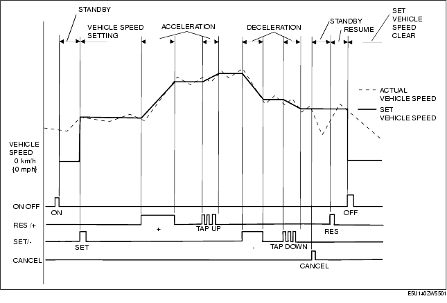

Technical Guide ➭ ENGINE ➭ CONTROL SYSTEM[L8, LF] ➭ DRIVE-BY-WIRE CONTROL OPERATION [L8, LF]
DRIVE-BY-WIRE CONTROL OPERATION [L8, LF]
id0140i7170600
{: #wp1059783}
Idle Speed Control
• Controls the throttle valve opening angle so that it is close to the target idle speed calculated by the PCM.
• The PCM calculates the target throttle opening angle by adding each type of correction to the basic duty value which is the basis of the throttle valve opening angle, and then sends a duty signal to the throttle valve actuator. The basic duty value is determined by the target engine speed.
• Each type of correction is as follows.
Correction
|
Correction {: #wp1059941} |
Purpose {: #wp1059943} |
Condition {: #wp1059945} |
Amount of Correction {: #wp1059947} |
|---|---|---|---|
|
Correction {: #wp1059835} |
Target {: #wp1059837} |
Conditions {: #wp1059893} |
Correction amount {: #wp1059896} |
|
A/C load correction {: #wp1059970} |
Prevents decrease in idle speed due to A/C operation. {: #wp1059973} |
A/C is operating. {: #wp1059976} |
A/C operation time→correction {: #wp1059979} |
|
Electrical load correction {: #wp1059983} |
Prevents decrease in idle speed due to electrical load operation. {: #wp1059986} |
Idle speed during electrical load operation and under any condition during driving {: #wp1059989} |
High electrical load→large correction {: #wp1059992} |
|
D-range correction (AT) {: #wp1059996} |
Prevents decrease in idle speed due to shifting into D-range {: #wp1059999} |
D-range signal is input. {: #wp1060002} |
Low idle speed when shifted to D range→large correction {: #wp1060005} |
|
Dashpot correction {: #wp1060009} |
Prevents decrease in idle speed due to insufficient intake air amount during deceleration. {: #wp1060012} |
Decelerated {: #wp1060015} |
High engine speed→large correction {: #wp1060018} |
|
Correction at engine start {: #wp1060153} |
Prevents decrease in idle speed after engine start. {: #wp1060156} |
After cranking and engine start {: #wp1060159} |
Low ECT→large correction {: #wp1060162} |
|
Hot engine restart correction {: #wp1060186} |
Prevents decrease in idle speed from hot engine restart. {: #wp1060189} |
Just after cranking and engine start when the ECT is 60 °C {140 °F} or more the IAT is 50 °C {122 °F} or more {: #wp1060192} |
High intake airflow temperature→large correction {: #wp1060195} |
|
Feedback correction A {: #wp1060235} |
Sets idle speed to target engine speed. {: #wp1060238} |
Idle speed during idling (vehicle is stopped) is over or under the target engine speed (except during test mode when the engine speed is 300 rpm or less). {: #wp1060241} |
Actual idle speed {: #wp1060244} Target engine speed or less→volume increase correction {: #wp1060270} Target engine speed or more→volume decrease correction {: #wp1060276} |
|
Feedback correction B {: #wp1060280} |
Sets to the target engine speed when the idle speed has decreased in the range not corrected by feedback correction A, and prevents a decrease in idle speed. {: #wp1060283} |
During deceleration at fully closed throttle, the engine speed is the target engine speed or more and when the feedback correction A is not performed (except during test mode). {: #wp1060286} |
Large difference between actual idle speed and target engine speed→large correction {: #wp1060289} |
|
Engaged coasting clutch volume increase correction {: #wp1060313} |
Reduces shock when the transaxle coasting clutch is engaged. {: #wp1060316} |
When coasting clutch is engaged. {: #wp1060319} |
High vehicle speed→large correction {: #wp1060322} |
|
Learning correction {: #wp1060346} |
Stores intake air volume changes based on differences between engines and changes due to aged deterioration, and feedback. {: #wp1060349} |
During feedback correction A when ECT is 85 °C {185 °F} or more. {: #wp1060352} |
During idling→average value of feedback correction A {: #wp1060355} |
Accelerator Control
• Controls the throttle valve opening angle through control of the throttle valve actuator, according to the amount of AP depression.
• The PCM controls the throttle valve actuator so that the actual throttle valve opening angle is close to the target throttle valve opening angle.
• The final throttle valve opening angle is determined by the sum of the target throttle opening angle during idling and the target throttle valve opening angle during regular driving.
• The target throttle valve opening angle during regular driving is determined based on the transmission gear position, the amount of AP depression and the engine speed. If the target throttle opening angle is at the fixed value or less during regular driving, the PCM switches to idle speed control.
• The PCM sets the throttle valve to the fully-closed position when the ignition switch is on or off and executes the idle position learning function to learn the throttle valve position. Due to this, changes in the throttle valve opening angle due to age deterioration are corrected.
• When the ignition switch is off, a main relay on request is output and the fully-closed learning function is executed. (See MAIN RELAY CONTROL OPERATION [L8, LF].)
Traction Control
• The PCM calculates the target throttle valve opening angle by the torque up/down request signal from the DSC HU/CM and TCM and the engine speed.
Cruise Control (With Cruise Control System)
• Calculates the throttle valve opening angle based on the deviation of the actual vehicle speed from the set vehicle speed which was set with the cruise control switch and sends a duty signal to the throttle valve actuator.
• The PCM controls the actual vehicle speed so that it is close to the set vehicle speed.{: #wp1060525}

• The cruise control includes the cruise control operation condition and the cruise control stop condition.
Cruise control operation condition
• When all of the following conditions are met, execution of the cruise control system is enabled (cruise control standby status). {: #wp1060584}- Cruise control ON OFF switch: ON {: #wp1060598}- Vehicle speed: More than 27 km/h {17 mph}
Cruise control stop condition
• When any of the following conditions are met even while in cruise control, the PCM stops the cruise control and clears the set vehicle speed. {: #wp1060637}- Ignition switch: OFF {: #wp1060651}- Cruise control ON OFF switch: OFF {: #wp1060665}• When any of the following conditions are met even while in cruise control, the PCM stops the cruise control while storing the set vehicle speed. {: #wp1060675}- Cruise control CANCEL switch: ON {: #wp1060689}- Neutral switch (MT) or CPP switch (MT): ON {: #wp1060703}- TR switch (AT) P/N position switch: ON {: #wp1060713}- Vehicle speed: Less than 22.5 km/h {13.9 mph} {: #wp1060725}- Brake switch: ON {: #wp1060740}- The actual vehicle speed is 15 km/h {9.3 mph} or more lower than the set vehicle speed during cruise control (ascending). {: #wp1060750}- Condition where actual vehicle speed is 15 km/h {9.3 mph} or more lower than the set vehicle speed continues for 60 s or more even when the RES/+ switch is on.
Cruise control function
• The cruise control includes accelerating, coasting, resume, tap-down, tap-up and downshift functions (AT).
**Function List
+-------------------------------+--------------------------------------------------------------------------------------------------------------------------------------------------------------------------------------------------------------------------------------------------------------------------------------------------------------------------------------------------------------------------------------------------------------------------------------+ | Function {: #wp1060877} | Contents {: #wp1060879} | +===============================+======================================================================================================================================================================================================================================================================================================================================================================================================================================+ | Accelerating {: #wp1060819} | • When any of the following conditions are met while driving in cruise control and when the RES/+ switch is continuously pressed, the PCM gradually increases the set vehicle speed. {: #wp1060821} - Except during resume operation {: #wp1060941}- The RES/+ switch is on one time or more during resume operation. {: #wp1060955} | +-------------------------------+--------------------------------------------------------------------------------------------------------------------------------------------------------------------------------------------------------------------------------------------------------------------------------------------------------------------------------------------------------------------------------------------------------------------------------------+ | Coasting {: #wp1060894} | • When the SET/- switch is continuously pressed, the PCM gradually decreases the set vehicle speed. {: #wp1060897} | +-------------------------------+--------------------------------------------------------------------------------------------------------------------------------------------------------------------------------------------------------------------------------------------------------------------------------------------------------------------------------------------------------------------------------------------------------------------------------------+ | Resume {: #wp1060901} | • When the RES/+ switch signal is input to the PCM during regular driving (cruise control is stopped) and the previously set vehicle speed is stored in the PCM, the PCM sets the set vehicle speed to the previously set vehicle speed and begins control. {: #wp1060904} | +-------------------------------+--------------------------------------------------------------------------------------------------------------------------------------------------------------------------------------------------------------------------------------------------------------------------------------------------------------------------------------------------------------------------------------------------------------------------------------+ | Tap down {: #wp1061007} | • When all of the following conditions are met while driving in cruise control, the PCM decreases the set vehicle speed by 1.6 km/h {1.0 mph} and controls the throttle valve actuator. {: #wp1061010} - During cruise control {: #wp1061040}- RES/+ switch off {: #wp1061054}- The RES/+ switch switches from off to on {: #wp1061067}- When actual vehicle speed is lower (set vehicle speed +2.0 km/h {+1.2 mph}) {: #wp1061080} | +-------------------------------+--------------------------------------------------------------------------------------------------------------------------------------------------------------------------------------------------------------------------------------------------------------------------------------------------------------------------------------------------------------------------------------------------------------------------------------+ | Tap-up {: #wp1061097} | • When all of the following conditions are met, the PCM increases the set vehicle speed by 1.6 km/h {1.0 mph} and controls the throttle valve actuator so that the vehicle speed is close to the set vehicle speed. {: #wp1061100} - During cruise control {: #wp1061131}- The RES/+ switch switches from off to on {: #wp1061145} | +-------------------------------+--------------------------------------------------------------------------------------------------------------------------------------------------------------------------------------------------------------------------------------------------------------------------------------------------------------------------------------------------------------------------------------------------------------------------------------+ | Downshift (AT) {: #wp1061156} | • When the following conditions are met, a downshift signal is sent to the TCM via CAN. {: #wp1061159} - RES/+ switch on {: #wp1061183}- Target vehicle acceleration is not reached {: #wp1061200} | +-------------------------------+--------------------------------------------------------------------------------------------------------------------------------------------------------------------------------------------------------------------------------------------------------------------------------------------------------------------------------------------------------------------------------------------------------------------------------------+**{: #wp1060811}